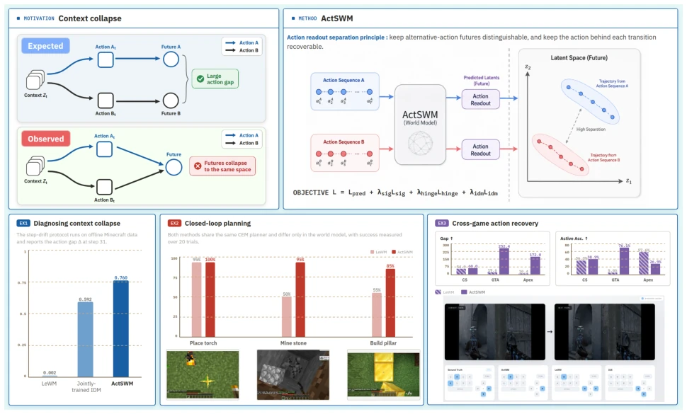
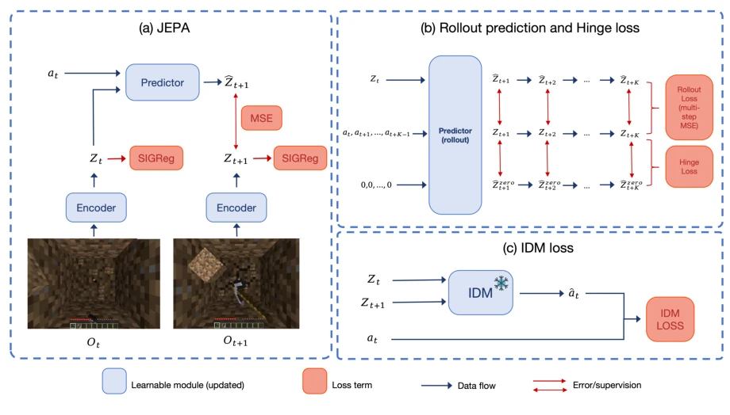
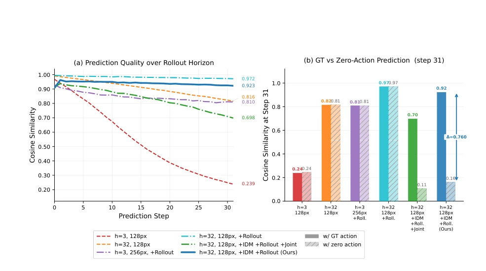
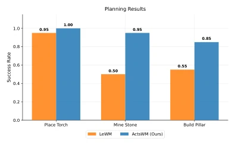
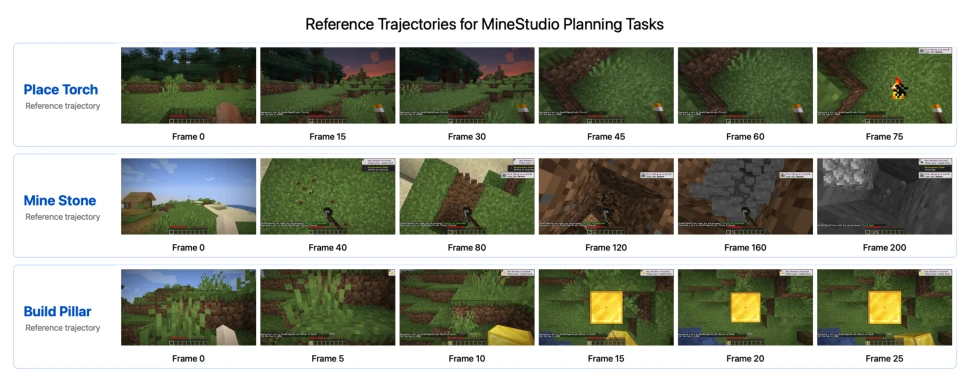
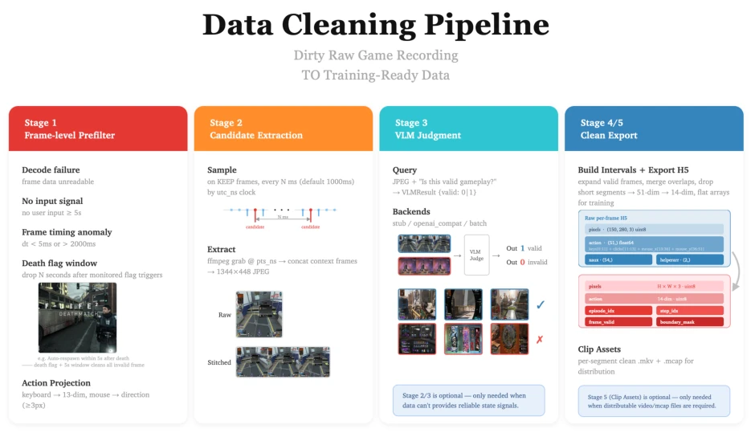
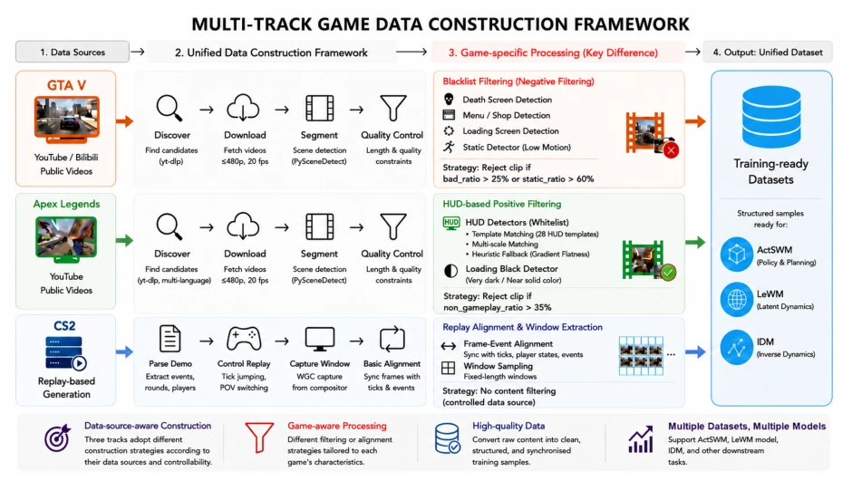

This paper performs a surgical intervention on the 'long-horizon hallucinations' of latent world models. The authors keenly point out that although many models predict accurately, different actions appear 'identical' in the latent space, causing planners to guess blindly. ActSWM employs a fixed readout plus contrastive loss to forcibly disentangle latent trajectories. In Minecraft, it indeed allows digging up more stones, but do not celebrate too early; this method still operates within games, and whether real robots can withstand physical noise remains uncertain. Moreover, although the fixed readout is stable, if initialization is poor, will it become ineffective? In summary, adding an 'action sensitivity' filter to the planner counts as a pragmatic patch to the JEPA architecture, but it is still far from general AGI. Additionally, experiments focus mainly on game environments, raising doubts about generalization to the real physical world, and the stability of long-horizon rollouts still requires verification in extreme cases, though as a theoretical validation, it is sufficiently robust.
研究动机Motivation
具身智能在开放世界游戏里搞长程规划，最大的坑就是“预测准了但没用”。现有 latent world models 比如 LeWM (Maes et al. 2026) 虽然能预测未来状态，但一旦时间拉长，不同动作序列在潜空间里就“撞车”了，这叫 Context Collapse。WAM (Han and Yilmaz 2026) 加了 inverse dynamics head，但只约束局部转移，不管长程 rollout。这就导致规划器没法区分“走左路”和“走右路”的后果。作者发现，光优化未来状态相似度不够，必须让潜轨迹对动作敏感，否则模型预测得再像，规划器也选不出好动作。这问题在 Minecraft 这种长任务里尤其致命，不解决就没法真正自主。
The biggest pitfall for embodied AI engaging in long-horizon planning in open-world games is 'accurate prediction but useless'. Existing latent world models such as LeWM (Maes et al. 2026) can predict future states, but once the time horizon is extended, different action sequences 'collide' in the latent space, a phenomenon known as Context Collapse. WAM (Han and Yilmaz 2026) adds an inverse dynamics head, but only constrains local transitions, disregarding long-horizon rollouts. This results in planners being unable to distinguish the consequences of 'taking the left path' versus 'taking the right path'. The authors discover that optimizing future state similarity alone is insufficient; latent trajectories must be sensitive to actions, otherwise, no matter how accurately the model predicts, the planner cannot select good actions. This issue is particularly fatal in long-horizon tasks like Minecraft; without resolution, true autonomy cannot be achieved.

Figure 1: Overview of ActSWM. Latent world models can suffer from context collapse, where long-horizon rollouts match plausible futures but become insensitive to action inputs. ActSWM addresses this by enforcing action-sensitive latent rollouts, leading to larger action gaps, stronger closed-loop planning, and larger CEM-over-random gaps in cross-game local action recovery.
ActSWM is fundamentally a JEPA architecture, but incorporates constraints for action sensitivity. The pipeline consists of three steps: first, a visual encoder converts observations into latents; second, a predictor forecasts future latents based on action sequences. There are two core innovations. First is rollout separation: during training, future trajectories generated by 'real action sequences' and 'all-zero action sequences' are contrasted; hinge loss is used to enforce dissimilarity, preventing the model from taking shortcuts and relying solely on context rather than actions. Second is the Fixed Action Readout: these readout parameters are frozen during training and used solely to infer actions from latent transitions. According to Lipschitz continuity, if the readout can accurately recover different actions, the corresponding latent transitions must be sufficiently separated. This transforms action sensitivity into a geometric constraint of the latent space, rather than a simple auxiliary prediction task. Finally, prediction loss, contrastive loss, and readout loss are summed for training, ensuring both accuracy and the ability to distinguish actions.

Figure 2: ActSWM framework. ActSWM combines JEPA-based latent prediction, multi-step rollout training, an action-sensitivity hinge loss, and a fixed action readout to learn action-sensitive latent dynamics.
Experiments are conducted primarily in Minecraft and several FPS games. Comparison baselines include LeWM and G-IDM, which predicts actions directly. Q1 tests Context Collapse using the step-drift protocol; it is found that after a 32-step rollout, the latent space gap between real actions and zero actions is 380 times larger than the baseline for ActSWM. Q2 performs closed-loop planning; on MineStone and Build Pillar tasks, the success rate is 30%-45% higher than LeWM. Q3 tests offline action recovery using CEM search; ActSWM's Gap metric improves by up to 16.5 times, and Active Accuracy is also better. Ablation experiments show that the fixed readout is more effective than the jointly trained readout, demonstrating the importance of the separation principle.

Figure 3: Q1 offline step-drift diagnostic on Minecraft VPT trajectories. The left panel tracks recorded-action prediction quality over a 32-step rollout. The right panel compares recorded-action and all-zero-action similarity at step 31 for the context, resolution, rollout-training, and readout variants described in the text. A larger gap indicates stronger action sensitivity.

Figure 4: Success-rate comparison on Minecraft planning tasks. ActSWM outperforms LeWM on placing a torch, min- ing a stone block, and building a pillar.

Figure 5: Reference trajectories for the three Minecraft planning tasks. Each row shows the target video segment for one task and marks the selected reference frames; these clips are encoded into target latent-embedding sequences for planning.

Figure 6: Overview of the gameplay data cleaning pipeline.

Figure 7: Multi-track game data construction framework. GTA V and Apex share web-video discovery, segmentation, and quality-control stages but use blacklist and HUD-whitelist filtering, respectively. CS2 instead uses controlled demo replay, WGC capture, and frame–event alignment. All pipelines produce a unified training-ready data format.